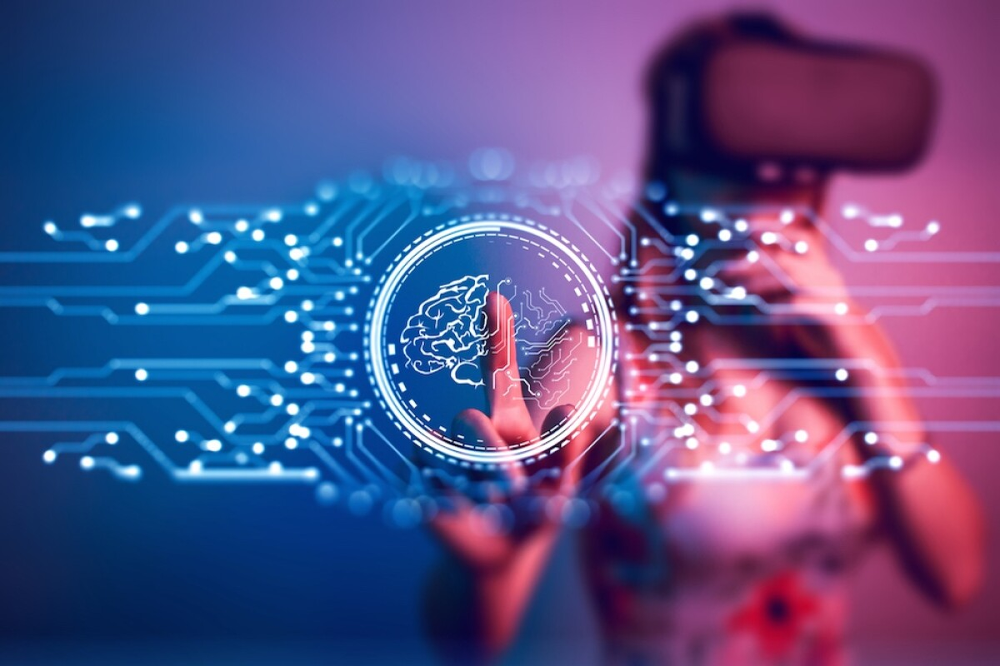

Tendencias tecnológicas que ganan fuerza en este 2023
Las megatendencias son fundamentales para poder dar dirección y proyección a un futuro. Esto nos permite tomar mejores decisiones e implementar estrategias no solo en las empresas, sino también en la educación y en nuestra vida diaria.
La tecnología avanza rápidamente, impulsada por factores económicos como la inflación y la escasez de trabajadores cualificados. Esto ha llevado a las empresas a reevaluar sus estrategias y adoptar nuevas tecnologías, acelerando la transformación digital.
En los últimos años, hemos vivido una notable aceleración digital, y en 2022 se introdujo la web 3.0. La adopción de tecnología ha superado las previsiones de la Ley de Moore. A continuación, se presentan algunas tendencias tecnológicas para este año.
TENDENCIAS TECNOLÓGICAS CLAVE:
Las tendencias tecnológicas son áreas donde la tecnología está marcando un cambio significativo. Los sectores que más las aprovechan incluyen finanzas, educación, salud, agricultura y software.
Conexión Sináptica Neuronal: Neuralink, fundada por Elon Musk, busca conectar la inteligencia biológica con la artificial para ayudar a personas con lesiones cerebrales.
Tecnología sostenible: Se enfoca en reducir la contaminación a través de la reutilización y el reciclaje.
Gemelos Digitales: La creación de réplicas digitales permitirá realizar pruebas sin riesgos, ya utilizado en Fórmula 1 y medicina.
Metaverso: Para 2025, se estima que el 40% de la población mundial interactuará en el metaverso, un espacio virtual social y económico.
Inteligencia Artificial: Se espera que la IA sea más adaptable y centrada en el servicio al cliente, consolidándose en el 2023.
Nube como estándar: Las organizaciones adoptarán más plataformas en la nube para impulsar agilidad e innovación.
Super apps: Aplicaciones que integran múltiples servicios para simplificar la vida del usuario están en auge.
Ciberseguridad: Se ha vuelto una prioridad crítica para proteger dispositivos e información frente a ciberataques.
Influencers virtuales: Avatares creados por IA están comenzando a popularizarse, con varios con millones de seguidores en redes sociales.
Agrotech: La incorporación de tecnología en la agricultura busca hacer los procesos más eficientes y sustentables.
Conclusión: Las tendencias tecnológicas están en constante cambio, y las empresas deben adaptarse para sobrevivir. Se anticipa un crecimiento en el sector tecnológico impulsado por la IA, el metaverso y la nube.